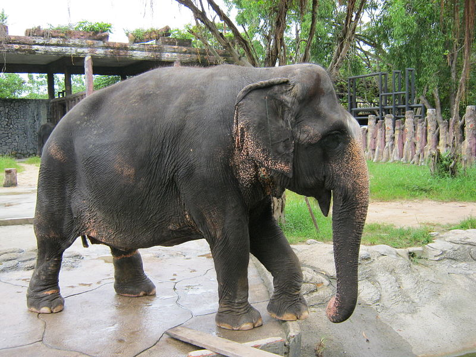
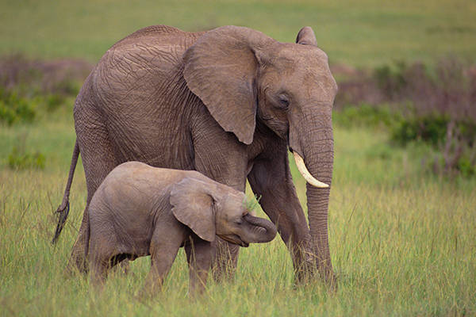

Vietnamese elephants are one of the three species of Proboscidea that remain on Earth today. Vietnam used to have 1500-2000 individuals distributed throughout Vietnam. The number of elephants has decreased rapidly and by 2002 only 59 to 80 individuals survived in the wild. Elephants in Vietnam are concentrated in Yok Don and Cat Tien National Parks in the southern central region and scattered throughout the western border with Laos and Cambodia. By 2000, approximately 150 domesticated elephants were concentrated mainly in Dak Lak Province. Elephants are animals that leave many imprints in Vietnamese culture and history.
Elephants are the largest living terrestrial animals. African bush elephants are the largest species, with males being 304–336 cm (10 ft 0 in–11 ft 0 in) tall at the shoulder with a body mass of 5.2–6.9 t (5.7–7.6 short tons) and females standing 247–273 cm (8 ft 1 in–8 ft 11 in) tall at the shoulder with a body mass of 2.6–3.5 t (2.9–3.9 short tons). Male Asian elephants are usually about 261–289 cm (8 ft 7 in–9 ft 6 in) tall at the shoulder and 3.5–4.6 t (3.9–5.1 short tons) whereas females are 228–252 cm (7 ft 6 in–8 ft 3 in) tall at the shoulder and 2.3–3.1 t (2.5–3.4 short tons). African forest elephants are the smallest species, with males usually being around 209–231 cm (6 ft 10 in–7 ft 7 in) tall at the shoulder and 1.7–2.3 t (1.9–2.5 short tons). Male African bush elephants are typically 23% taller than females, whereas male Asian elephants are only around 15% taller than females.
The skeleton of the elephant is made up of 326–351 bones. The vertebrae are connected by tight joints, which limit the backbone's flexibility. African elephants have 21 pairs of ribs, while Asian elephants have 19 or 20 pairs.
An elephant's skull is resilient enough to withstand the forces generated by the leverage of the tusks and head-to-head collisions. The back of the skull is flattened and spread out, creating arches that protect the brain in every direction. The skull contains air cavities (sinuses) that reduce the weight of the skull while maintaining overall strength. These cavities give the inside of the skull a honeycomb-like appearance. The cranium is particularly large and provides enough room for the attachment of muscles to support the entire head. The lower jaw is solid and heavy.[62] Because of the size of the head, the neck is relatively short to provide better support. Lacking a lacrimal apparatus, the eye relies on the harderian gland to keep it moist. A durable nictitating membrane protects the eye globe. The animal's field of vision is compromised by the location and limited mobility of the eyes. Elephants are considered dichromats and they can see well in dim light but not in bright light. The core body temperature averages 35.9 °C (96.6 °F), similar to that of a human. Like all mammals, an elephant can raise or lower its temperature a few degrees from the average in response to extreme environmental conditions.
Elephant ears have thick bases with thin tips. The ear flaps, or pinnae, contain numerous blood vessels called capillaries. Warm blood flows into the capillaries, helping to release excess body heat into the environment. This occurs when the pinnae are still, and the animal can enhance the effect by flapping them. Larger ear surfaces contain more capillaries, and more heat can be released. Of all the elephants, African bush elephants live in the hottest climates, and have the largest ear flaps. Elephants are capable of hearing at low frequencies and are most sensitive at 1 kHz (in close proximity to the Soprano C).
The trunk, or proboscis, is a fusion of the nose and upper lip, although in early fetal life, the upper lip and trunk are separated. The trunk is elongated and specialised to become the elephant's most important and versatile appendage. It contains up to 150,000 separate muscle fascicles, with no bone and little fat. These paired muscles consist of two major types: superficial (surface) and internal. The former are divided into dorsals, ventrals, and laterals while the latter are divided into transverse and radiating muscles. The muscles of the trunk connect to a bony opening in the skull. The nasal septum is composed of tiny muscle units that stretch horizontally between the nostrils. Cartilage divides the nostrils at the base. As a muscular hydrostat, the trunk moves by precisely coordinated muscle contractions. The muscles work both with and against each other. A unique proboscis nerve – formed by the maxillary and facial nerves – runs along both sides of the trunk. Elephant trunks have multiple functions, including breathing, olfaction, touching, grasping, and sound production. The animal's sense of smell may be four times as sensitive as that of a bloodhound. The trunk's ability to make powerful twisting and coiling movements allows it to collect food, wrestle with other elephants, and lift up to 350 kg (770 lb). It can be used for delicate tasks, such as wiping an eye and checking an orifice, and is capable of cracking a peanut shell without breaking the seed. With its trunk, an elephant can reach items at heights of up to 7 m (23 ft) and dig for water under mud or sand. Individuals may show lateral preference when grasping with their trunks: some prefer to twist them to the left, others to the right. Elephants can suck up water both to drink and to spray on their bodies. An adult Asian elephant is capable of holding 8.5 L (2.2 US gal) of water in its trunk. They will also spray dust or grass on themselves. When underwater, the elephant uses its trunk as a snorkel. The African elephant has two finger-like extensions at the tip of the trunk that allow it to grasp and bring food to its mouth. The Asian elephant has only one, and relies more on wrapping around a food item and squeezing it into its mouth. Asian elephants have more muscle coordination and can perform more complex tasks. Losing the trunk would be detrimental to an elephant's survival, although in rare cases, individuals have survived with shortened ones. One elephant has been observed to graze by kneeling on its front legs, raising on its hind legs and taking in grass with its lips. Floppy trunk syndrome is a condition of trunk paralysis in African bush elephants caused by the degradation of the peripheral nerves and muscles beginning at the tip.
Elephants usually have 26 teeth: the incisors, known as the tusks, 12 deciduous premolars, and 12 molars. Unlike most mammals, which grow baby teeth and then replace them with a single permanent set of adult teeth, elephants are polyphyodonts that have cycles of tooth rotation throughout their lives. The chewing teeth are replaced six times in a typical elephant's lifetime. Teeth are not replaced by new ones emerging from the jaws vertically as in most mammals. Instead, new teeth grow in at the back of the mouth and move forward to push out the old ones. The first chewing tooth on each side of the jaw falls out when the elephant is two to three years old. The second set of chewing teeth falls out at four to six years old. The third set falls out at 9–15 years of age, and set four lasts until 18–28 years of age. The fifth set of teeth falls out at the early 40s. The sixth (and usually final) set must last the elephant the rest of its life. Elephant teeth have loop-shaped dental ridges, which are thicker and more diamond-shaped in African elephants.
The tusks of an elephant are modified second incisors in the upper jaw. They replace deciduous milk teeth at 6–12 months of age and grow continuously at about 17 cm (7 in) a year. A newly developed tusk has a smooth enamel cap that eventually wears off. The dentine is known as ivory and its cross-section consists of crisscrossing line patterns, known as "engine turning", which create diamond-shaped areas. As a piece of living tissue, a tusk is relatively soft; it is as hard as the mineral calcite. Much of the tusk can be seen outside; the rest is in a socket in the skull. At least one-third of the tusk contains the pulp and some have nerves stretching to the tip. Thus it would be difficult to remove it without harming the animal. When removed, ivory begins to dry up and crack if not kept cool and moist. Tusks serve multiple purposes. They are used for digging for water, salt, and roots; debarking or marking trees; and for moving trees and branches when clearing a path. When fighting, they are used to attack and defend, and to protect the trunk. Like humans, who are typically right- or left-handed, elephants are usually right- or left-tusked. The dominant tusk, called the master tusk, is generally more worn down, as it is shorter with a rounder tip. For the African elephants, tusks are present in both males and females, and are around the same length in both sexes, reaching up to 300 cm (9 ft 10 in), but those of males tend to be thicker. In earlier times, elephant tusks weighing over 200 pounds (more than 90 kg) were not uncommon, though it is rare today to see any over 100 pounds (45 kg). In the Asian species, only the males have large tusks. Female Asians have very small tusks, or none at all. Tuskless males exist and are particularly common among Sri Lankan elephants. Asian males can have tusks as long as Africans', but they are usually slimmer and lighter; the largest recorded was 302 cm (9 ft 11 in) long and weighed 39 kg (86 lb). Hunting for elephant ivory in Africa and Asia has led to natural selection for shorter tusks and tusklessness.
An elephant's skin is generally very tough, at 2.5 cm (1 in) thick on the back and parts of the head. The skin around the mouth, anus, and inside of the ear is considerably thinner. Elephants typically have grey skin, but African elephants look brown or reddish after wallowing in coloured mud. Asian elephants have some patches of depigmentation, particularly on the forehead and ears and the areas around them. Calves have brownish or reddish hair, especially on the head and back. As elephants mature, their hair darkens and becomes sparser, but dense concentrations of hair and bristles remain on the end of the tail as well as the chin, genitals and the areas around the eyes and ear openings. Normally the skin of an Asian elephant is covered with more hair than its African counterpart. An elephant uses mud as a sunscreen, protecting its skin from ultraviolet light. Although tough, an elephant's skin is very sensitive. Without regular mud baths to protect it from burning, insect bites and moisture loss, an elephant's skin suffers serious damage. After bathing, the elephant will usually use its trunk to blow dust onto its body and this dries into a protective crust. Elephants have difficulty releasing heat through the skin because of their low surface-area-to-volume ratio, which is many times smaller than that of a human. They have even been observed lifting up their legs, presumably in an effort to expose their soles to the air.
8 Ton That Thuyet, My Dinh 2,
Hanoi, Vietnam.
0966469746 (Huấn)
0666729716 (Nghĩa)
0522697743 (Bình)
0849818969 (Phương)
0373485924 (Lâm)
KawasakiZoo@gmail.com